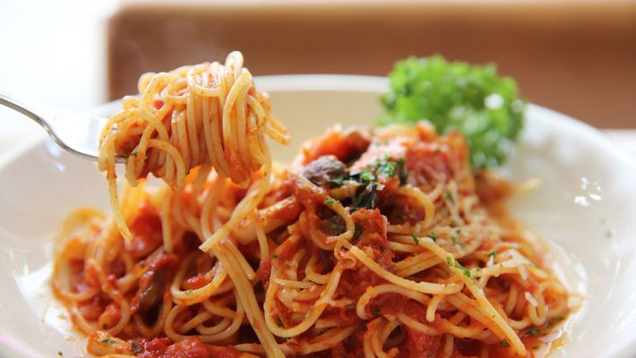

MACARRÃO COM MOLHO RÁPIDO

Ingredientes:
- 1 pacote de macarrão tipo espaguete
- 1/2 cebola picada
- 03 dentes grandes de alho, picados (quantidade opcional)
- Azeitonas verdes (opcional)
- Queijo ralado
- 2 caixa grande de molho pronto
- 3 caixas de creme de leite
- 3 calabresas cortadas em cubos
Modo de preparo:
- Coloque água para cozinhar com sal a gosto e um fio de óleo (para quem gosta de usar óleo no cozimento do macarrão). Quando a água estiver fervendo, coloque todo o pacote de macarrão e deixe cozinhar até chegar ao ponto de "ao dente". Escorra e reserve em uma travessa.
- Molho:
- Refogue o alho com um pouco de azeite (o suficiente para untar o fundo da panela, não usando muito por que a calabresa solta gordura). Coloque a cebola e mexa até dourar.
- Coloque a calabresa, refogue bem e só depois coloque o molho pronto.
- Quando o molho estiver bem apurado, adicione o creme de leite aos poucos até ficar em um tom rosado. Espere ferver um pouco para apurar bem o gosto.
- Retire do fogo e arrume sobre o macarrão.
- Decore com azeitas e queijo ralado.